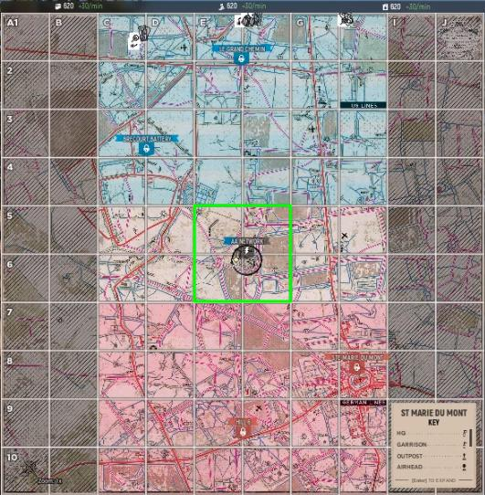

Publicidad 1
Hay dos operaciones de combate principales en HLL: Modos de guerra y ofensivo.
Un partido estilo tira y afloja donde cada equipo lucha por el control territorial. No hay boletos, solo territorio y un cronómetro. Ganas capturando todo el territorio enemigo o manteniendo la mayoría de los sectores al final del tiempo (1 hora y 30 minutos).
El territorio es el objetivo principal, por lo que es importante conocer el área de operación. Cada mapa se divide en un sistema de cuadrícula de 10x6 o 6x10 (dependiendo de la orientación del mapa). Un cuadrado de cuadrícula es de 200 mx 200 m y el mapa está agrupado en 5 sectores.
Al inicio de la partida, solo habrá un sector activo (puede ser capturado o recapturado) que será territorio Neutral. Una vez que el territorio neutral ha sido capturado, se volverá Amigo o Enemigo dependiendo del equipo que lo haya capturado.
A partir de ese momento, habrá 2 sectores activos en juego: los sectores Amigo y Enemigo adyacentes entre sí. Los otros puntos fuertes se bloquearán hasta que se capture el territorio adyacente, poniéndolos en juego.
Zona de límite: estar en cualquier lugar del punto fuerte (indicado por un círculo de rayas negras) y los 4 cuadrados de la cuadrícula alrededor del punto fuerte contribuirán a capturar o defender un punto.
Cada jugador dentro del punto fuerte proporciona tres veces la fuerza máxima.
El posicionamiento es clave y es importante comprender dónde debes estar. Usa tu Mapa (tecla M) para orientarte primero a los “Sectores Activos” (neutro, amigo o enemigo) y luego a los “Puntos Fuertes” en juego.
Presiona la tecla T para saber si estás contribuyendo activamente a capturar o a defender un punto. El progreso del límite actual se muestra en la parte superior de la pantalla:
Es importante equilibrar las fuerzas entre ataque y defensa en este modo de juego tipo tira y afloja. Demasiado a la ofensiva y eres vulnerable. Demasiado en defensa y es probable que te sientas abrumado.
En este modo de juego, un bando ataca y el otro defiende. Los defensores ganan aguantando la duración del cronómetro (30 minutos por sector) y los atacantes ganan al capturar los 5 sectores. El modo de juego ofensivo se juega en los mismos mapas que la guerra, excepto en Omaha Beach (solo modo ofensivo).
Cambios respecto del modo de guerra:
Si bien las diferencias entre los modos de juego son sutiles, la experiencia de juego es increíblemente diferente y agradable.
Publicidad 2